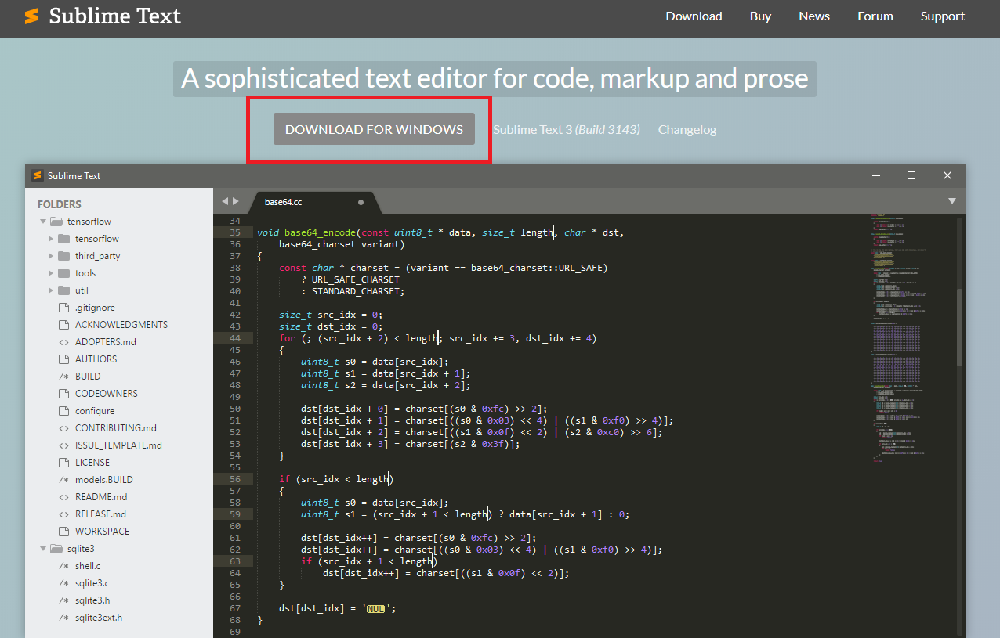
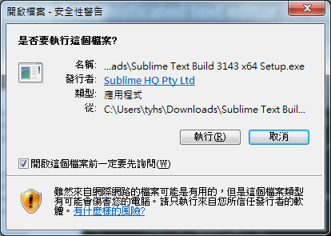
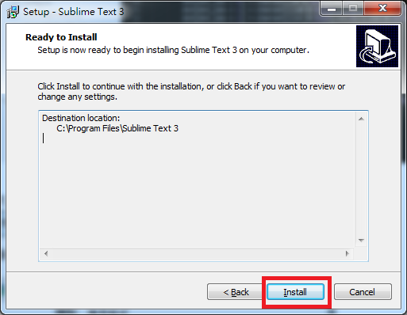
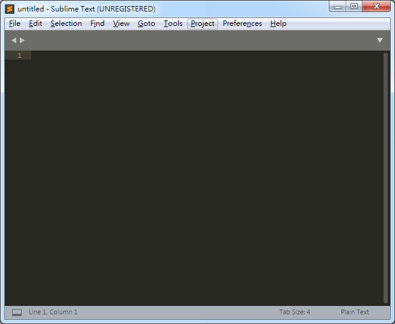

安裝一款好的editor【文字編輯器】
雖然進入到Python環境就可以開始撰寫程式，
但卻不是一個良好撰寫程式的環境，只靠單一的文字介面也很難做到版本控制。
所以我們需要一款好的editor【文字編輯器】軟體，
幫助我們做到 文字提示、方法提示、特殊字顏色區分、語法上色等功能，讓我們撰寫程式更加上手。
Sublime Text
Sublime Text是一款極為輕量的文字編輯器，目前已發行到第三個版本。
🗒️安裝教學
- 進入Sublime Text首頁，點選正中間 【DOWNLOAD FOR WINDOWS】，即會自動開始下載。 
下載完成後，開起【Sublime Text Build 3143 x64 Setup.exe】，選擇執行。
一路選擇【next】或可以手動更改安裝位置，最後選擇【Install】。
安裝完成後即可在【Windows開始選單】中，找到Sublime Text 3，點擊開啟。

🗒️基本操作
選擇Menu列左側的【File】
開啟新檔【New File】→快捷鍵：Ctrl + N
儲存檔案【Save】→快捷鍵：Ctrl + S
如果要開啟語法上色提示等功能，
每次開啟一個新檔案時，一定要立即存檔，
並將檔案副檔名命名為【.py】，好讓編輯器知道該用哪個語言的語法來提示。
命名成功後，瀏覽器上的標籤頁【tab】，即會顯示檔名。
開啟側邊攔：側邊欄可以幫助我們快速的在檔案之間切換。
選擇Menu列中間的【View】，選擇【Side Bar】→開啟側邊攔【Show Side Bar】
快捷鍵：Ctrl + B + K(三個有順序的按比較容易成功)
開啟側邊欄後，即可以清單的方式瀏覽檔案。
🗒️撰寫Python程式碼
比較看看擁有 副檔名 跟 沒有副檔名 的程式碼差別
不管是字串、串列，或者函式、方法都有顏色標示，撰寫程式時較容易區分。
👨💻實作練習
- 用Sublime Text開啟一個新的檔案，命名為【test.py】，並且儲存在桌面資料夾上。 執行之後會印出【hello python world】！